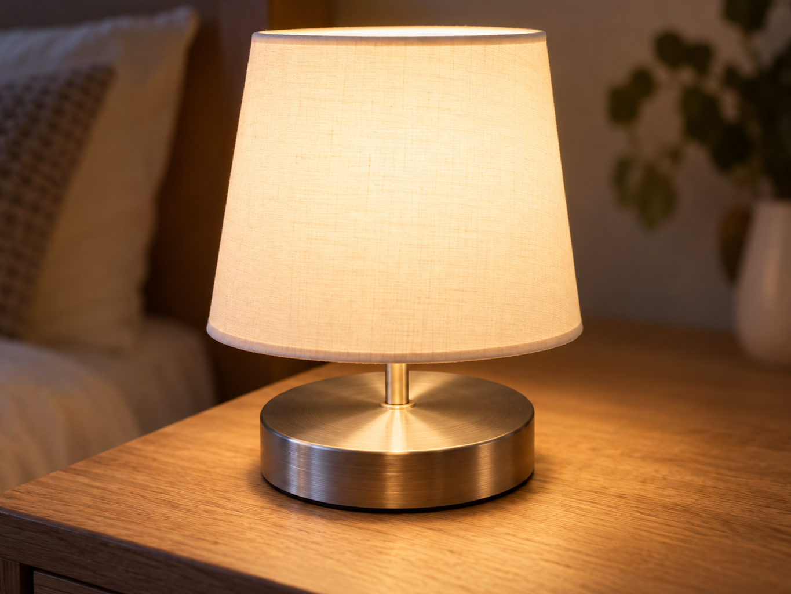
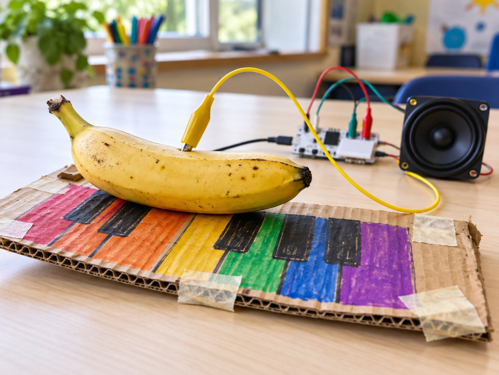
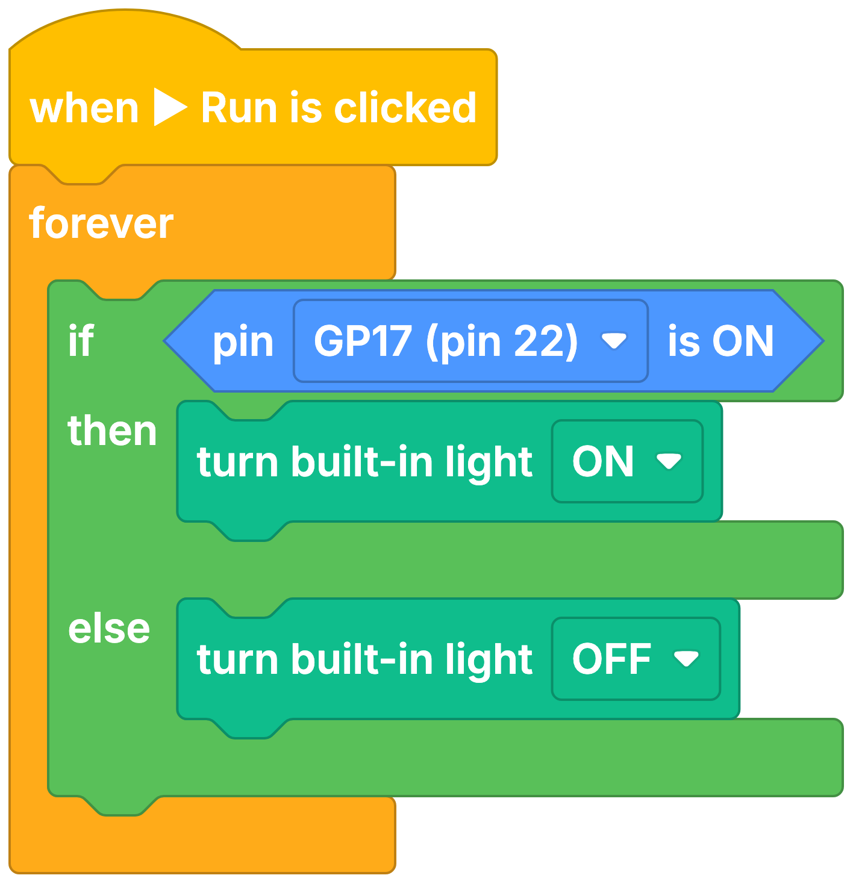

Touch lamp
DetectFinger touches the pad
DecideIs the lamp already on?
DoToggle the light
A capacitive touch sensor notices when a finger comes close to its metal pad.
It detects the tiny change in electric charge caused by your body, so no moving parts are needed.
Use it anywhere a project needs a hidden, wipe-clean or feather-light button.


